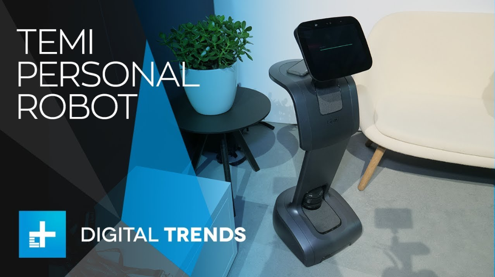
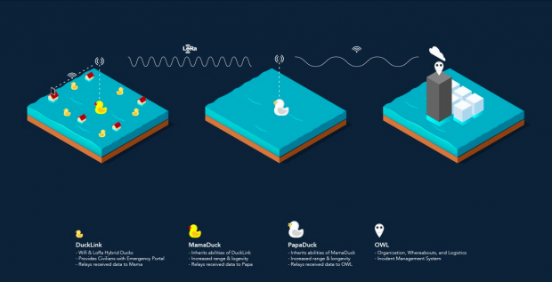

The Tech Forum
Tech Day NYC '19, 5/2/19

This thursday at 1 pm marks the time for this years biggest start up even in the USA. The location is the Jacob Javits convention center. More information at Tech Event News by David Technology News
The World's First Home Robot

temi is an industry first with its AI capabilities that allow it to interact with humans
at the comfort of their home. The question is, can this robot clean my house like the
robot in the CartoonNetwork Jetsons show. Curious to know how temi might deliver a more
immersive experience in the areas of studying, or using media? More information can be
found in the link below.
https://www.robotemi.com
Project Owl Mobile Network ad-hoc network hardware
When disasters take place, cellular and electrical networks are affected and made useless. Project Owl implements a system of portable IoT devices known as Ducklinks that provide ad-hoc inter access to areas affected by a disaster. Visit Project Owl for more information.
In posuere, nisl id condimentum interdum, risus justo tristique ante, vel feugiat enim enim non ante. Phasellus pretium enim ante, a semper libero gravida ac. Morbi ac metus rhoncus, iaculis lorem nec, tempus turpis. Nulla facilisi. Sed eu magna id ipsum interdum consectetur in sit amet odio. Vivamus et turpis pulvinar, cursus libero non, vestibulum turpis. Praesent sollicitudin ipsum eros. Proin id felis non ligula elementum maximus. Etiam at orci a nunc semper blandit sit amet in nibh. Aliquam hendrerit urna quis urna faucibus, eu volutpat ex sodales. Praesent ullamcorper lorem nibh. Maecenas in finibus risus, ut sodales velit.
Aenean non aliquet ipsum. Donec eget dolor id sapien tincidunt placerat. Etiam suscipit venenatis nibh, nec lacinia purus iaculis vulputate. Proin volutpat quis mauris a laoreet. Vivamus eros neque, faucibus a varius id, sollicitudin eu ex. Quisque ultricies massa at augue vestibulum tincidunt. Nam congue ullamcorper faucibus. Aenean et congue ligula. Nunc at consectetur erat, a sagittis dolor.
Duis suscipit, lacus eu dapibus tempor, sapien nisi pulvinar est, non molestie nunc ex vitae ipsum. Nunc congue odio id ante interdum pulvinar. Aliquam maximus libero vel diam aliquet, id sollicitudin ligula laoreet. Etiam feugiat a arcu vitae interdum. Integer porta maximus velit. Morbi arcu arcu, pulvinar sed quam sit amet, vulputate ornare diam. Integer eget risus sed leo dapibus egestas. Duis mi ex, facilisis vitae consequat sed, dignissim quis tellus. Proin pulvinar massa sed justo posuere gravida. Duis hendrerit blandit lectus, quis malesuada turpis cursus quis. Duis tempus sit amet tortor sit amet dapibus.